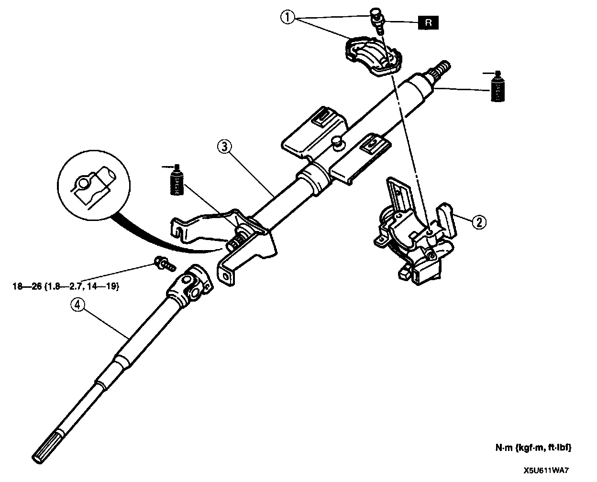
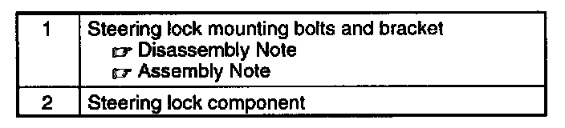
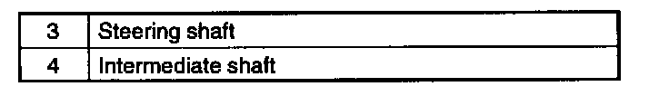
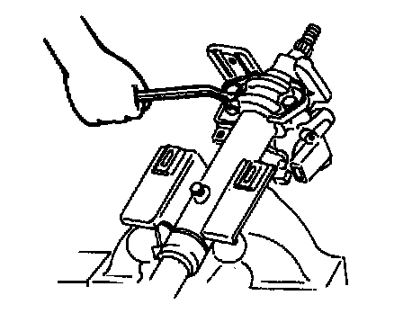
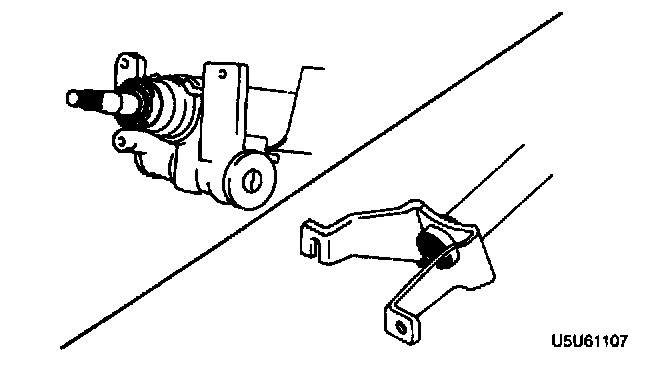
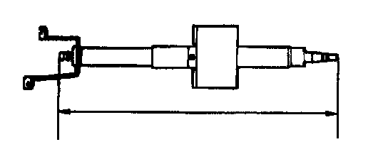

Disassembly and Assembly
DISASSEMBLY/ASSEMBLY


1. Disassemble in the order indicated in the table.
2. Assemble in the reverse order of disassembly.
Steering Lock Mounting Bolts And Bracket Disassembly Note

- Use a chisel to make a groove in the heads of the steering lock mounting bolts. Remove the bolts with a screwdriver. Remove the steering lock component.
Steering Lock Mounting Bolts And Bracket Assembly Note

- Install the steering lock component. Install the new steering lock mounting bolts. Tighten the bolts until the heads break off.
Steering Shaft Inspection
- Inspect the following, and replace the column component as necessary.

1. Column bearing damage.

2. Steering shaft length.
Length: 593.8-595.8 mm (23.38-23.45 inch)